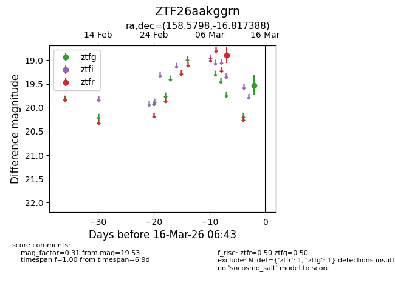
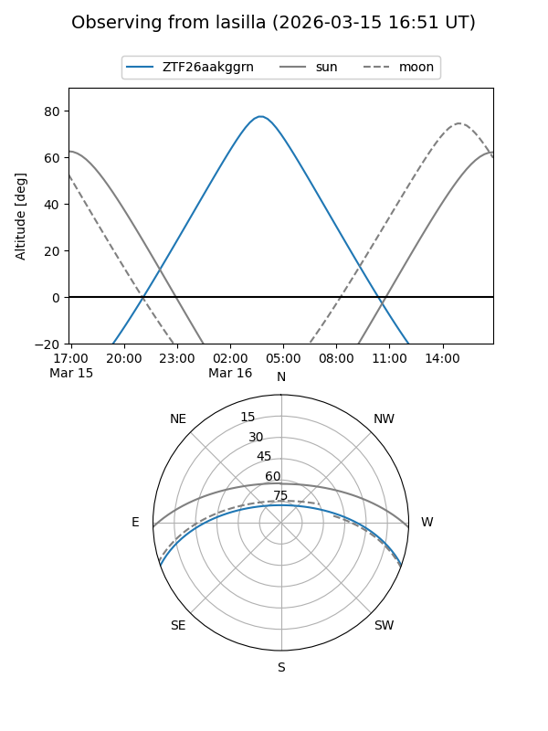
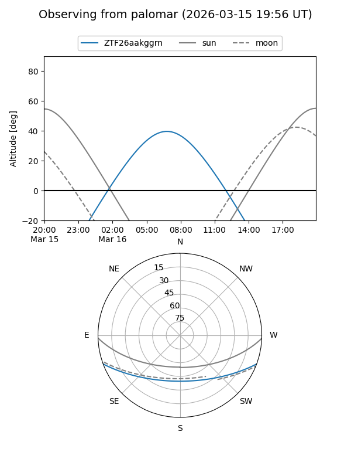

ZTF26aakggrn
Target ZTF26aakggrn at 2026-03-16 06:45
Aliases and brokers:
FINK: link
Lasair: link
ALeRCE: link
alt names
ZTF26aakggrn (ztf,fink_ztf)
Coordinates:
equatorial (ra, dec) = 158.5798,-16.81739
equatorial (HMS+DMS) = 10:34:19.15,-16:49:02.60
galactic (l, b) = (261.8376,+34.89103)
Flags:
Photometry:
last ztfg=19.53, ztfr=18.89
1 ztfg, 1 ztfr detections
Lightcurve

Visibility


Additional plots